#2386 Gefährten
Alternativ: War Horse
Auszeichnungen: für 6 Oscars nominiert
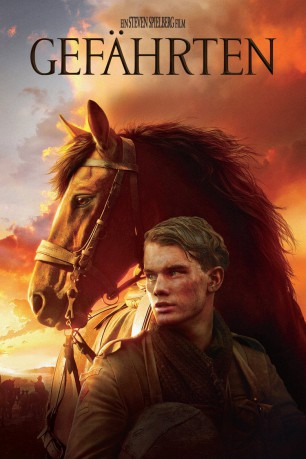 
 IMDB-Wertung: 7.2 / 10
IMDB-Wertung: 7.2 / 10  Metascore: 72
Metascore: 72 
Albert, Sohn einer englischen Bauernfamilie, und sein Rassehengst Joey sind unzertrennlich. Als sein Vater das Wunderpferd, das sogar die strapaziöse Arbeit vor dem Pflug meistert, an die Armee verkaufen muss, werden die beiden auseinandergerissen. Als Last- und Zugtier im Ersten Weltkrieg eingesetzt, wechselt Joey die Fronten wie auch seine Besitzer und wird zu einer Symbolfigur für unbezwingbaren Überlebenswillen im Irrsinn des Krieges. Doch wird sein traumatischer Weg je wieder den seiner wichtigsten Bezugsperson kreuzen?
Jahr: 2011
Dauer: 146 Minuten
FSK:
Land: USA Studio: Touchstone PicturesTonspuren: DTS - ,
Untertitel: Deutsch,
Auflösung: 1080p (1920x800) Größe: 10240 MB
Genre: Drama, Krieg
Regisseur:  Steven Spielberg
Steven Spielberg
Drehbuch: Lee Hall, Richard Curtis, Michael Morpurgo, Nick Stafford
Soundtrack: John Williams
Darsteller:
- Jeremy Irvine als Albert Narracott
 Peter Mullan als Ted Narracott
Peter Mullan als Ted Narracott- 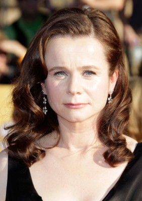 Emily Watson als Rose Narracott
- 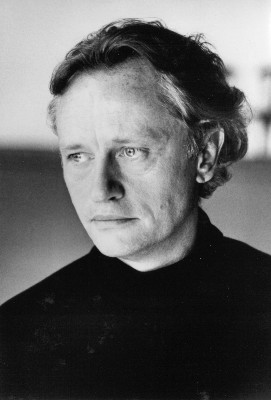 Niels Arestrup als Grandfather
 David Thewlis als Lyons
David Thewlis als Lyons Tom Hiddleston als Capt. Nicholls
Tom Hiddleston als Capt. Nicholls Benedict Cumberbatch als Maj. Jamie Stewart
Benedict Cumberbatch als Maj. Jamie Stewart- Celine Buckens als Emilie
- 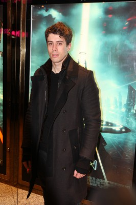 Toby Kebbell als Geordie Soldier
 Patrick Kennedy als Lt. Charlie Waverly
Patrick Kennedy als Lt. Charlie Waverly David Kross als Gunther
David Kross als Gunther- Matt Milne als Andrew Easton
 Robert Emms als David Lyons
Robert Emms als David Lyons Eddie Marsan als Sgt. Fry
Eddie Marsan als Sgt. Fry- 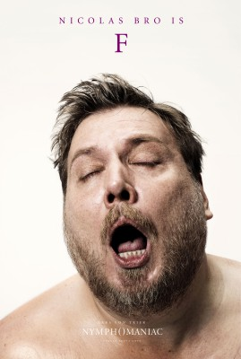 Nicolas Bro als Friedrich
 Rainer Bock als Brandt
Rainer Bock als Brandt- 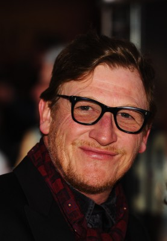 Geoff Bell als Sgt. Sam Perkins
- 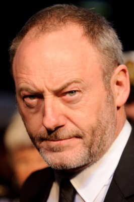 Liam Cunningham als Army Doctor
- 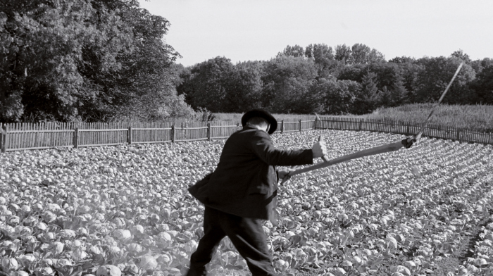 Sebastian Hülk als German Officer at Farm
- 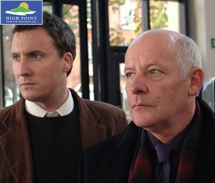 Gerard McSorley als Market Auctioneer
- Tony Pitts als Sgt. Martin
- Irfan Hussein als Sgt. Maj. Singh
 Pip Torrens als Maj. Tompkins
Pip Torrens als Maj. Tompkins- 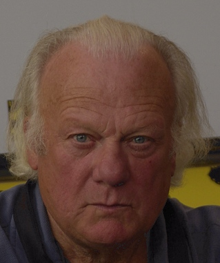 Philippe Nahon als French Auctioneer
- Justin Brett als Motorbike Rider
- Pat Laffan als Devon Farmer #2
- Michael Ryan als British Trench Solder #1
- Peter O'Connor als British Trench Solder #2
- Trystan Pütter als German Trench Soldier #1
- 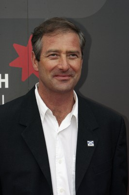 Julian Wadham als Trench Captain
- 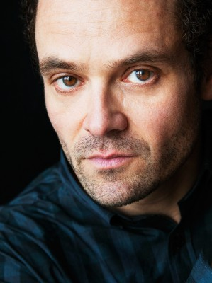 David Dencik als Base Camp Officer
- 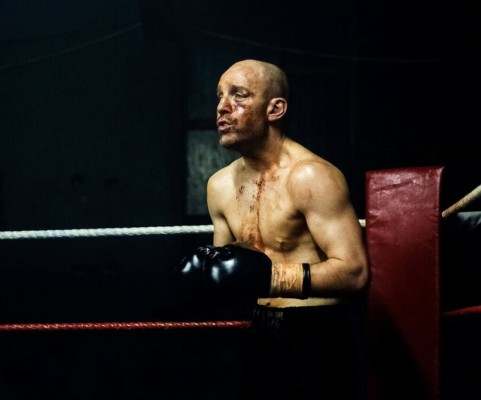 Johnny Harris als Infantry Recruitment Officer
- Maggie Ollerenshaw als Narracott's Neighbor
- 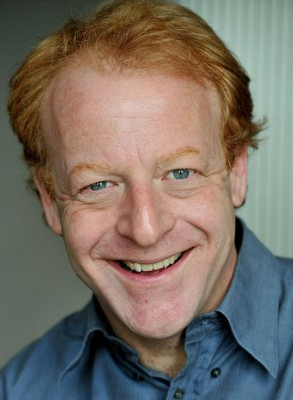 Martin Dew als Lyons' Cronie
- Edgar Canham als Boy on Bicycle , uncredited
- Graham Curry als Scottish Highlander at Auction , uncredited
- Charles Hulme als British Soldier , uncredited
- Oliver Malam als Young Soldier , uncredited
- Jadran Malkovich als German Lieutenant , uncredited
- Ilona McCrea als Nurse , uncredited
- Stephen Molloy als British Trench Soldier , uncredited
- Jimmy Pethrus als British Soldier / German Soldier , uncredited
- 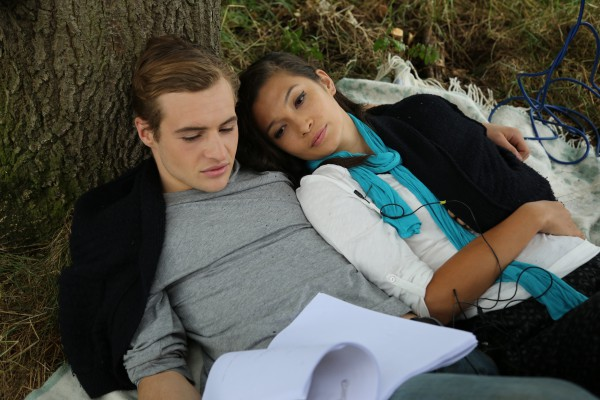 Max Scully als Cavalry , uncredited
- Jayme Swiftt als Dartmoor Soldier , uncredited
- Curtis Lee Thompson als British Trench Soldier , uncredited
- 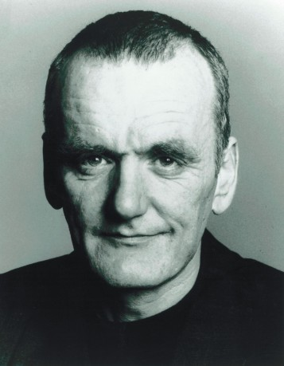 Alan Williams als Hospital Orderly , uncredited
- Leonard Carow als Michael
- Hinnerk Schönemann als German Soldier in No Man's Land
- Gary Lydon als Si Easton
- Jean-Claude Lecas als Butcher
Datei: X:\2011(G-M)\Gefährten (2011, FSK, 1920x800).mkv seit 04.11.2015
Festplatte: HD 2011(G-Z)
 Es gibt insgesamt 100 Filme in der Gruppe '2011(G-M)'
Es gibt insgesamt 100 Filme in der Gruppe '2011(G-M)'